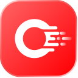

Open WebUI alternatives (2026)
Open WebUI is a personal agents tool: Self-hosted, offline-capable AI platform with a chat interface for Ollama and OpenAI-compatible models, plus tools, pipelines and agent features. Pricing, as the maker states it: Source-available. Its GitHub repo has 156,694 stars. We found 93 tools in the directory that do overlapping work (personal assistance); 53 of them are open source and 18 list a free or freemium plan. Below are the 10 closest, ranked by how many tasks and sub-tasks they share with Open WebUI, then by GitHub stars.
Updated
Quick answer: the top picks on this list, ranked by GitHub stars and listing maturity, are Orkes, AnythingLLM and Nanobot, out of 12 tools listed below. At a glance: 10 open-source, 10 free or freemium and 10 local or self-hosted across 12 link-checked tools (last verified ).
Verified on : every tool link on this page was checked by our daily link check. No paid placements.
Ranked comparison (top 10)
| # | Tool | Pricing | Best for | Open source | Runs locally | GitHub stars |
|---|---|---|---|---|---|---|
| 1 | Open source + cloud | build an agent, automate workflows | Yes | Self-hosted | 32,383 | |
| 2 | AnythingLLM | Open source + cloud | control a computer | Yes | Offline | 67,533 |
| 3 | Open source | build an agent, connect tools via MCP | Yes | Self-hosted | 49,343 | |
| 4 | LibreChat | Open source | write code, connect tools via MCP | Yes | Self-hosted | 46,280 |
| 5 | Open source | personal agents | Yes | 36,130 | ||
| 6 | agenticSeek | Open source | write code | Yes | Offline | 27,539 |
| 7 | Screenpipe | Source-available + cloud | research the web | No | Offline | 22,064 |
| 8 | Leon | Open source | personal agents | Yes | Self-hosted | 17,604 |
| 9 | Eigent | Open source | control a computer, build multi-agent systems | Yes | 15,656 | |
| 10 |  Octop | Open source | personal agents | Yes | Self-hosted | 10,975 |
Looking for the open-source microservice workflow engine? See Orkes Conductor →.
" if x["slug"]=="conductor" else "") + f"- AnythingLLM (Open source + cloud): Local-first desktop and server app for chatting with your documents, running agents and connecting any LLM. Consider it because it is open source, so you can self-host and inspect it; it also covers RAG and documents and computer and desktop control.
 Nanobot (Open source): Ultra-lightweight, self-hosted personal agent framework in Python with a web UI, tools, memory and MCP support. Consider it because it is open source, so you can self-host and inspect it; it is aimed at developers who want to build on it; it also covers memory and agent frameworks and SDKs.
Nanobot (Open source): Ultra-lightweight, self-hosted personal agent framework in Python with a web UI, tools, memory and MCP support. Consider it because it is open source, so you can self-host and inspect it; it is aimed at developers who want to build on it; it also covers memory and agent frameworks and SDKs.- LibreChat (Open source): Self-hosted, multi-user AI chat platform with agents, MCP, skills, code interpreter and support for OpenAI, Anthropic, Gemini, AWS, Azure and many more providers. Consider it because it is open source, so you can self-host and inspect it; it also covers rules, skills and config.
 QwenPaw (Open source): Personal AI assistant you can install locally or in the cloud, connected to multiple chat channels. Consider it because it is open source, so you can self-host and inspect it.
QwenPaw (Open source): Personal AI assistant you can install locally or in the cloud, connected to multiple chat channels. Consider it because it is open source, so you can self-host and inspect it.- agenticSeek (Open source): Fully local autonomous agent that browses, codes and plans without paid APIs. Consider it because it is open source, so you can self-host and inspect it; it is aimed at developers who want to build on it; it also covers planning and task tracking.
- Screenpipe (Source-available + cloud): Records your screen and audio locally so AI agents can search and act on your computer history. Consider it because it is aimed at developers who want to build on it; it also covers computer and desktop control.
- Leon (Open source): Open-source personal assistant that runs on your own server. Consider it because it is open source, so you can self-host and inspect it; it is aimed at developers who want to build on it; it also covers personal assistants.
- Eigent (Open source): Open-source cowork desktop app that runs multi-agent workflows locally. Consider it because it is open source, so you can self-host and inspect it; it also covers computer and desktop control and workflow automation.
- Octop (Open source): Self-hosted, multi-user AI assistant with multiple agents. Consider it because it is open source, so you can self-host and inspect it; it also covers running many agents in parallel.
- DeepChat (Open source): Open-source, local-first AI agent desktop client with MCP, skills, ACP support and remote control from messaging apps. Consider it because it is open source, so you can self-host and inspect it; it also covers computer and desktop control and rules, skills and config.
Open WebUI vs alternatives at a glance
| Tool | Pricing | Open source / licence | GitHub stars | Good for |
|---|---|---|---|---|
| Source-available | No | 156,694 | personal assistance | |
| AnythingLLM | Open source + cloud | MIT | 67,533 | controlling a computer, personal assistance |
| Open source | MIT | 49,343 | building AI agents, personal assistance | |
| LibreChat | Open source | MIT | 46,280 | writing code, personal assistance |
| Open source | Apache License 2.0 | 36,130 | personal assistance | |
| agenticSeek | Open source | GNU GPL v3.0 | 27,539 | writing code, personal assistance |
| Screenpipe | Source-available + cloud | Screenpipe Commercial License (All rights reserved) | 22,064 | personal assistance, research |
| Leon | Open source | MIT | 17,604 | personal assistance, open-source agents |
| Eigent | Open source | Apache License 2.0 | 15,656 | controlling a computer, automating workflows |
| Octop | Open source | MIT | 10,975 | personal assistance |
| DeepChat | Open source | Apache License 2.0 | 6,371 | controlling a computer, automating workflows |
More: Open WebUI listing · All personal agents tools · All alternatives pages
Related searches: Open-source personal AI assistants
Alternatives are picked from directory data only: same category plus shared tasks and sub-tasks. Pricing is as each maker states it; GitHub stars as recorded on each listing.